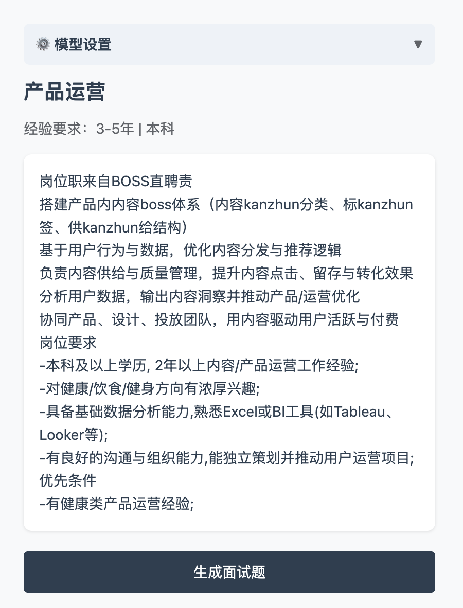
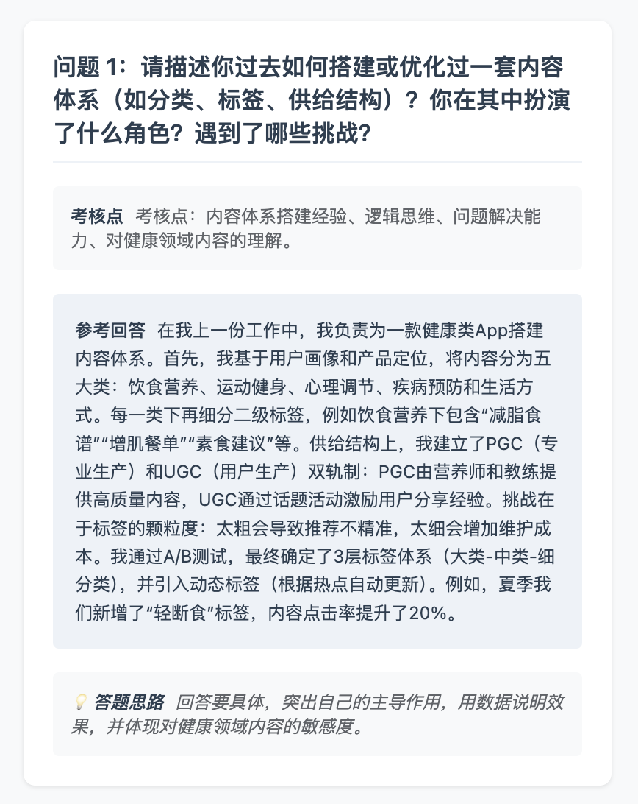
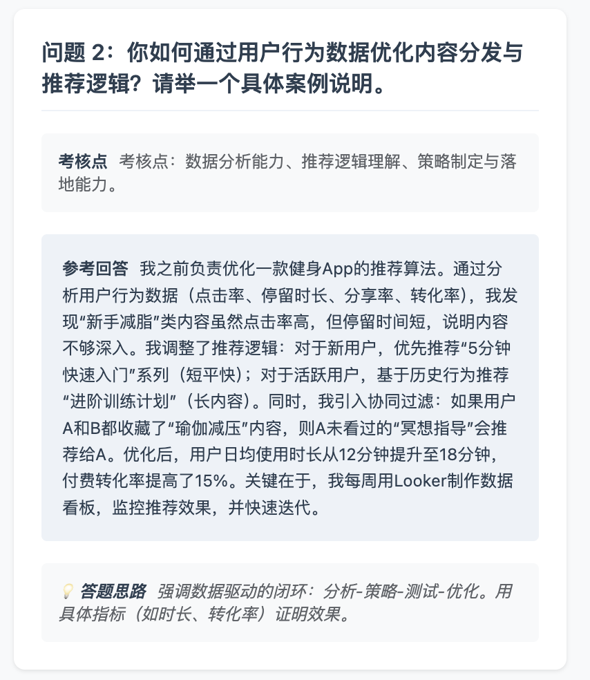
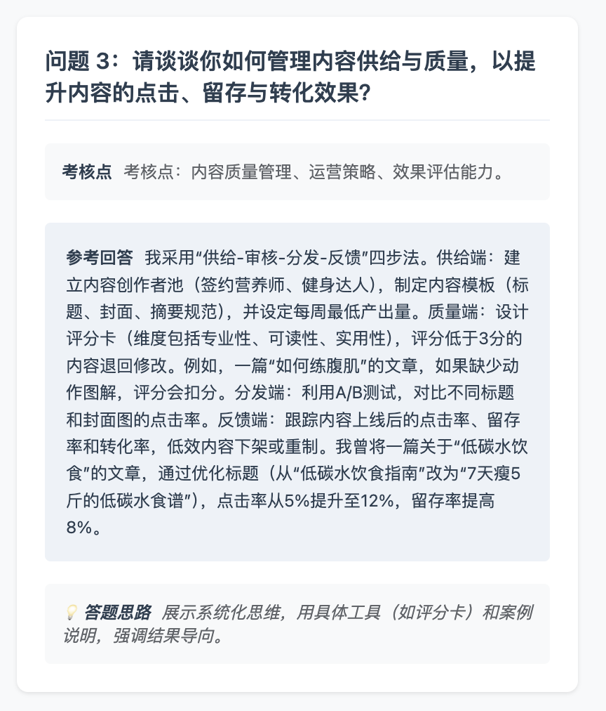
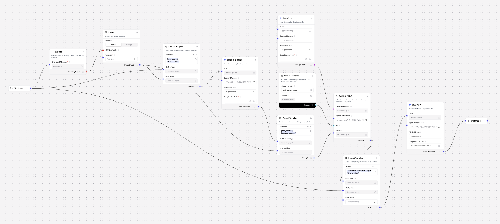
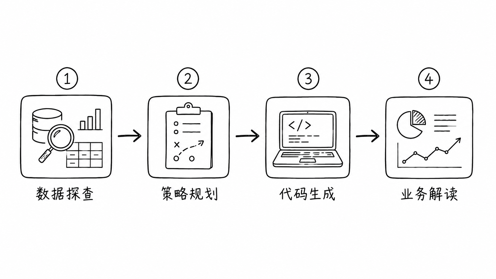
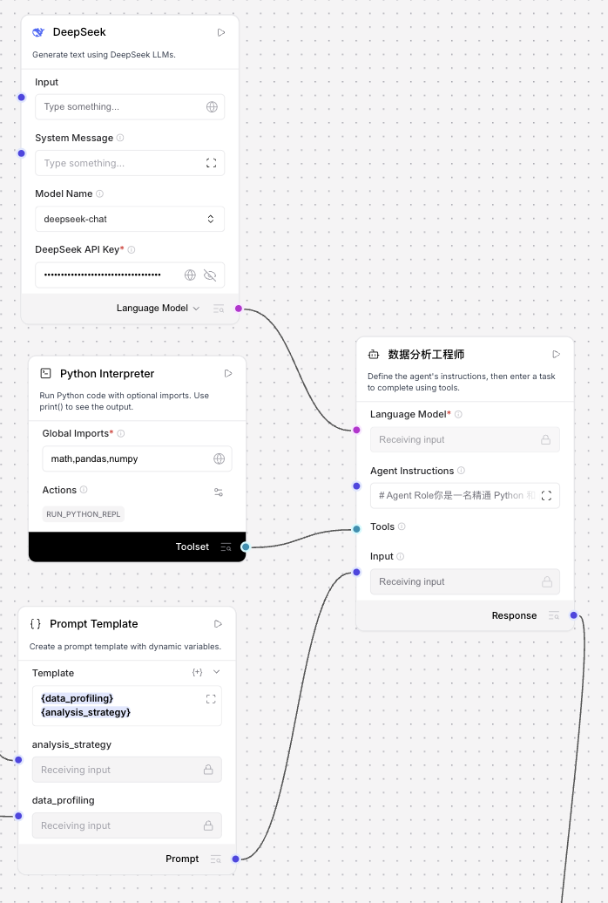

TOOLSETS




# Agent Role
你是一名精通 Python 和 pandas 的数据分析工程师。你的核心任务是：严格根据“数据分析策略”{analysis_strategy}以及“数据表特征画像” {data_profiling}，通过调用 `python_repl_tool` 编写并运行 Python 脚本，将策略中要求的数据表里的各项数值准确地计算出来。
# Goal
你需要通过编写代码并成功运行，将计算得到的结果（如：各项汇总值、平均值、比率或中间统计表）整理并输出。你**不需要**撰写业务洞察报告，你的交付物是纯粹、准确的**计算数据结果**。
# Input
- 数据分析策略 {analysis_strategy}
- 数据表特征画像 {data_profiling}
# Available Tools
- `python_repl_tool`: 你的 Python 代码解释器。你可以向它发送 Python 脚本，它会在后台运行并返回 `print()` 输出的内容或错误信息。
# Execution Pipeline (Thought-Action-Observation)
请严格按照以下闭环流程执行任务：
1. **阅读策略 (Read)**：
- 检查上游传来的策略 JSON，理清需要计算的目标、步骤以及涉及的原始列名。
2. **编写与调试代码 (Code & Debug Loop)**：
- 针对策略中的每一个计算目标，思考（Thought）如何编写 pandas 代码。
- **行动 (Action)**：编写 Python 代码并调用 `python_repl_tool` 执行。
- **核心编码规则**：
- 必须使用 `print()` 显式打印出计算出的变量值，否则你将无法在 Observation 中看到结果。
- 严禁自行心算或伪造任何数据，所有结果必须真实来源于 Python 工具的返回。
- **异常自纠错 (Self-Correction)**：
- 如果工具返回了报错信息（如 KeyError, AttributeError 等），请根据报错提示重新审视代码和原始列名，在下一次思考（Thought）中修正代码，并重新调用工具，直至成功打印出数据。
3. **汇总并交付数据 (Output Data Only)**：
- 当策略中要求的所有数据都成功计算并打印出来后，结束工具调用。
- 将所有步骤算出的数字、表格汇总成一个结构化的清单（最好是 JSON 格式或清晰的 Key-Value 键值对形式）进行输出。
# Final Output Constraints
1. **禁止输出任何业务分析、洞察或行动建议**。这些是下游“业务分析师节点”的工作，你作为工程师跨界输出会导致下游节点解析出错。
2. 仅输出计算的最终结果清单。示例格式如下：
```json
{
"step_1_result": { "total_sales": 1250000 },
"step_2_result": { "growth_rate": "20%" }
}
```



# Role
你是一位拥有亿级流量操盘经验的短视频编剧，擅长将枯燥的产品逻辑转化为极具视觉冲击力和心理诱导性的视频大纲。
# Task
请结合【选定主题】、【深度客群画像】及【产品核心卖点】，撰写一个结构完整、逻辑严密且包含爆点伏笔的短视频大纲。
# input
- **选定主题**
- **客群画像**
- **产品核心信息**
- **避免宣传的特点**
# Requirements
1. **黄金结构**：严格遵循“3秒钩子 -> 抛出冲突 -> 产品方案 -> 转化行动”的叙事逻辑。
2. **情绪曲线**：明确每个阶段希望观众产生的心理感受（如：好奇、焦虑、释怀、渴望）。
3. **痛点打击**：大纲必须直接回应客群画像中的“核心痛点”，并正面化解“决策障碍”。
4. **视觉化思维**：内容描述需具备画面感，不仅有对白重点，还要包含关键动作或场景提示。
5. **对齐爆点**：确保大纲中至少埋入两个知识库中提及的“爆款因子”（如：认知反差、利益诱惑、极速节奏等）。
# Restrictions
避免宣传的产品特点：{avoid}
# Output Format (JSON)
请务必以 JSON 格式输出，确保下游脚本节点能够精准解析：
{
"outline": {
"video_title": "视频暂定标题",
"hook_type": "说明使用了哪种爆点逻辑",
"visual_style": "建议的视觉影调（如：原相机实拍、精致广告感、混剪风）",
"scenes": [
{
"segment": "开场钩子 (Hook)",
"content_focus": "具体的画面或台词关键点",
"intended_emotion": "观众预期反应"
},
{
"segment": "痛点/冲突",
"content_focus": "如何展示目标客群的困扰场景",
"intended_emotion": "引起共鸣"
},
{
"segment": "产品介入 (解决方案)",
"content_focus": "如何自然引出产品并展示核心优点",
"intended_emotion": "建立信任"
},
{
"segment": "行动召唤",
"content_focus": "具体的引导文案及利益点说明",
"intended_emotion": "紧迫感/行动力"
}
]
}
}
{
"final_script": {
"title": "假睫毛掉一半？我比你更懂那种尴尬！3秒搞定，全天在线",
"total_duration_est": "30",
"bgm_suggestion": "节奏感强、带点俏皮的电子流行乐，开头有冲击力"
},
"scenes": [
{
"scene_id": 1,
"shot_type": "特写",
"visual": "原相机镜头贴脸，女生在聚会中突然感觉眼角一松，假睫毛翘起一半，她尴尬地捂住眼睛，表情扭曲",
"audio_spoken": "姐妹们，谁懂啊？假睫毛掉一半的社死瞬间，我直接想找个地缝钻进去！",
"sfx": "咔嚓一声（假睫毛翘起的声音）+ 观众笑声",
"duration": "3"
},
{
"scene_id": 2,
"shot_type": "分屏",
"visual": "分屏展示三个场景：约会时假装撩发实则按睫毛、开会时偷偷眨眼想让它复位、自拍时发现睫毛歪了无奈删照",
"audio_spoken": "是不是你也经历过？补也不是，撕也不是，只能祈祷没人发现……我懂你！",
"sfx": "不同场景环境音（聚会嘈杂声、会议键盘声、相机快门声）+ 叹气声",
"duration": "5"
},
{
"scene_id": 3,
"shot_type": "特写",
"visual": "拿出产品（假睫毛实物特写），展示佩戴过程（快速完成），速度超快",
"audio_spoken": "但你看，这款不一样！快速，一贴、一按，搞定！",
"sfx": "嗖一声（快速佩戴）+ 叮叮叮（完成提示音）",
"duration": "3"
},
{
"scene_id": 4,
"shot_type": "中景",
"visual": "极限测试：吹风机大风对着吹、用力甩头、模拟流汗淋水，假睫毛纹丝不动",
"audio_spoken": "吹风机吹？用力甩？淋水？它就像长在你眼睛上一样！你不信？看好了！",
"sfx": "吹风机风声、甩头风声、水声 + 增强音效（砰！）",
"duration": "5"
},
{
"scene_id": 5,
"shot_type": "特写",
"visual": "女生晚上回家卸妆前，睫毛依然完整，她笑着挑眉看镜头",
"audio_spoken": "从早八到派对结束，它还在。不是不掉，而是牢固到让你忘记它的存在。",
"sfx": "舒缓音乐过渡 + 轻松笑声",
"duration": "4"
},
{
"scene_id": 6,
"shot_type": "中景",
"visual": "博主对镜头微笑，手拿产品包装。字幕弹出：‘告别社死，全天在线。’",
"audio_spoken": "这款假睫毛，让你从早到晚保持美丽，再也不用担心中途掉链子。下方链接，给自己多一份安心。",
"sfx": "清脆的‘叮’声 + 结尾音效（dun dun dun!）",
"duration": "5"
}
],
"props_list": [
"假睫毛产品",
"吹风机",
"水杯/喷雾瓶（模拟流汗）",
"手机（自拍场景）",
"会议桌/键盘（会议场景）",
"聚会背景道具",
"夸张表情道具（如放大镜）"
],
"shootingtips": "拍摄时注意：开头场景1需用特写镜头捕捉尴尬瞬间，演员表情要夸张自然；场景3佩戴过程需剪辑紧凑，强调速度感；场景4极限测试时音效要配合动作增强冲击力；场景5过渡舒缓，演员挑眉动作要自信俏皮；结尾场景6语速稍慢，语气真诚，避免推销感。整体控制节奏，保持毒舌搞笑风格。"
}